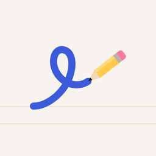

Linework compared with typical AR tracing apps
Linework: Trace & Sketch
Most AR drawing and tracing apps work the same way: your phone shows a picture over the live camera view and you draw along it on paper. The differences are in how they charge, whether they show ads, and how well the picture stays still. Here is how Linework compares with what is typical in the category.
| Linework | Typical AR tracing app | |
|---|---|---|
| Price | Free to trace your own photos; A$2.99 once for the full library | Weekly or yearly subscriptions are common, often around US$7-10 a week |
| Ads | None | Common in free apps |
| Trace your own photo | Free, with every tracing tool | Often locked behind a subscription after a trial |
| Keeping the image still | Picture lock and touch lock; focus lock on iPhone | Drifting or refocusing images are a frequent complaint in reviews |
| Works without the camera | Lightbox mode: trace through thin paper on the screen | Varies |
| Account | None needed | Varies; some need sign-in |
| Privacy label | App Store: Data Not Collected | Varies; check each listing |
How we compared
- We read the store listings, reviews and 2026 roundups of AR drawing apps that appear when you search phrases like 'AR drawing app no subscription' and 'tracing app one-time purchase'.
- The 'typical app' column describes patterns we saw across many apps, not one named app. Some apps in the category are free with ads, some sell a one-time unlock, and many use weekly or yearly plans.
- Linework's column comes from its own App Store and Google Play listings.
- Last checked 10 November 2026. Prices change; the store listing is always the final word.
When another app may suit you better
- You want to draw on an iPad: Linework isn't offered for iPad.
- You want an image projected onto a wall with a projector: Linework shows the picture on the phone screen.
- You want a full digital painting app: Linework is for drawing on real paper, walls or materials.
- You want step-by-step drawing lessons: Linework's Sketch steps reveal a picture in stages, but it is a tracing tool, not a course.